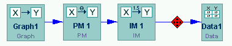

|

Tetrad 4.2 Download Site
Common Download Problems and Solutions
- When you click "LAUNCH TETRAD," you are asked to download
a .jnlp file.
However, the Tetrad 4.2 software requires JRE 1.4.0 or higher to
be installed anyway, so it makes more sense to just install JRE
1.4.0.
- Problem #2: You do have Java Web Start installed, but you've
still being asked to download .jnlp files. If you actually downloaded
the .jnlp file and are trying to double click it to get it to run,
you are running into the same problem; Windows still doesn't know
what program to use to open it. The solution, on a Windows machine,
is to set the "open" action for type "jnlp"
to use "javaws.exe" to open files of this type. The easy
way to do this is as follows.
- Download the .jnlp file.
- Right click the .jnlp file..
- Select "Open with..."-->"Choose Program."
- Click "Other..."
- Navigate to C:\Program Files\Java Web Start\javaws.exe and open
it.
- Check "Always use this program to open these file."
- Click "OK."
- Java Web Start told you that you need version 1.4+ of the JRE,
and you dutifully downloaded (and installed!) version 1.4+ of the JRE,
but you still can't launch Tetrad.
- Most likely you didn't register version the version of the JRE you
just installed with Java Web Start. You can do this as follows.
- Open the Java Web Start console.
- Windows: If you have the icon still on your desktop or in
your Start menu, double click it. Otherwise, find "javaws.exe"
and double click that.
- Linux: Find "javaws" and run it from the command
line.
- Select "Preferences" and click the "Java"
tab.
- Add your newly installed JRE 1.4 to the list of JRE's using the
tools provided.
jdramsey@andrew.cmu.edu
|